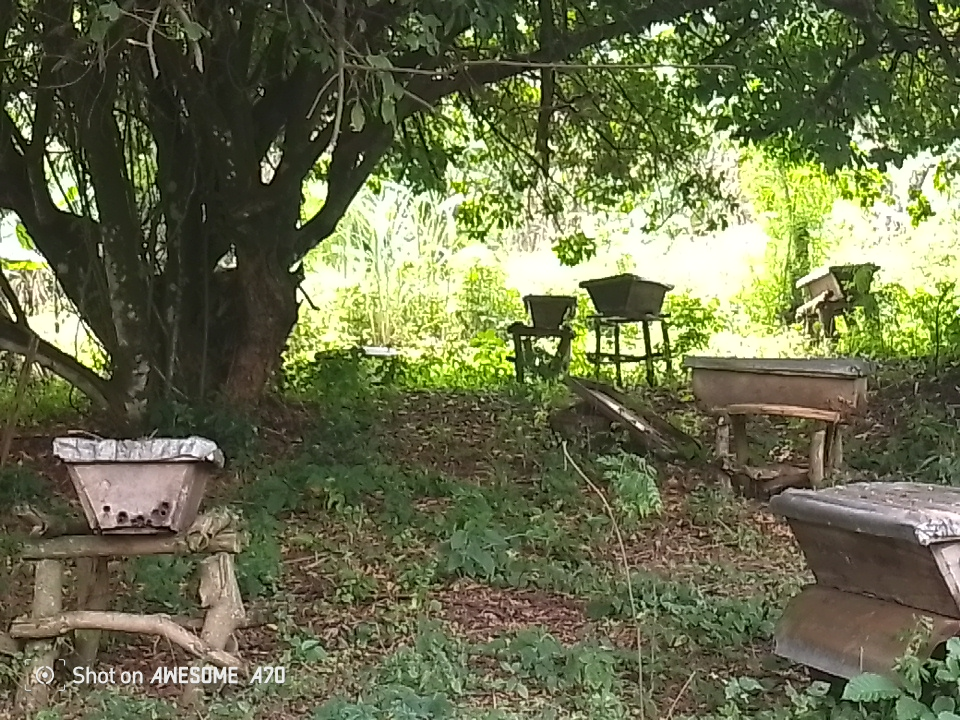
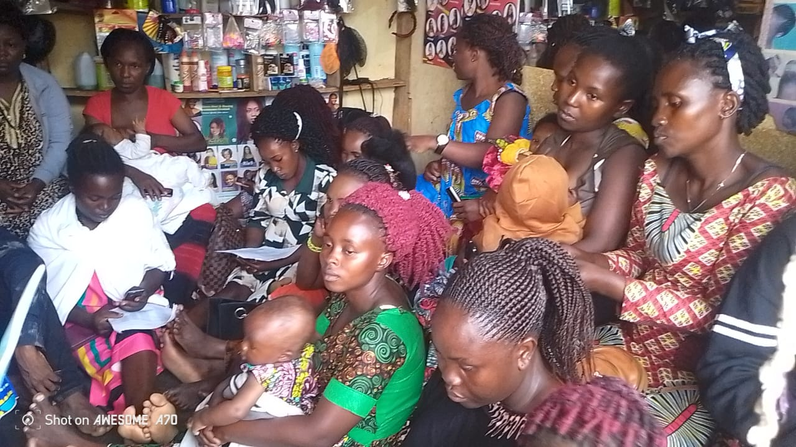
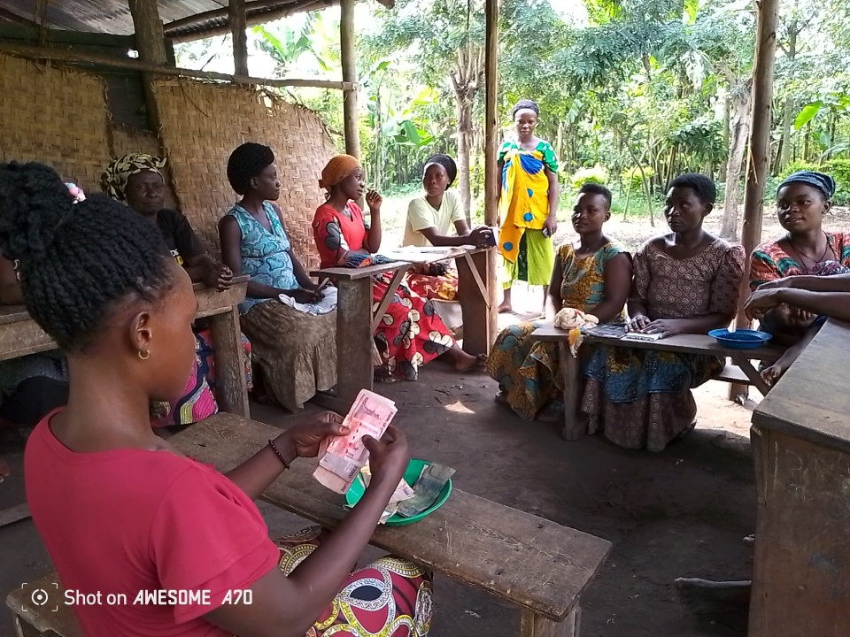
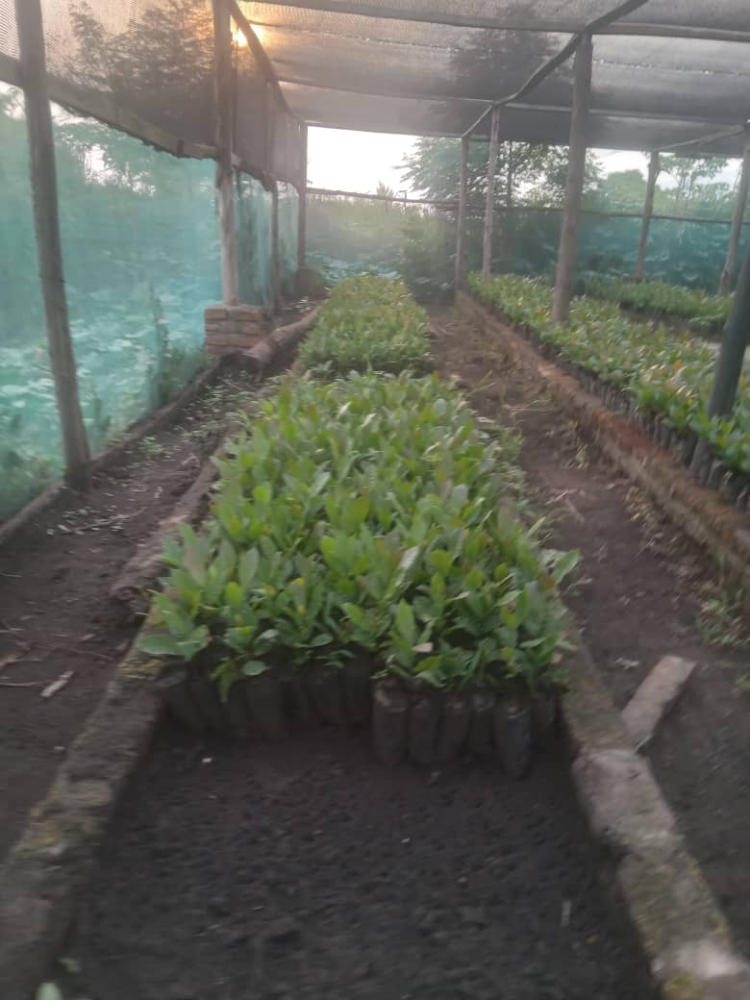
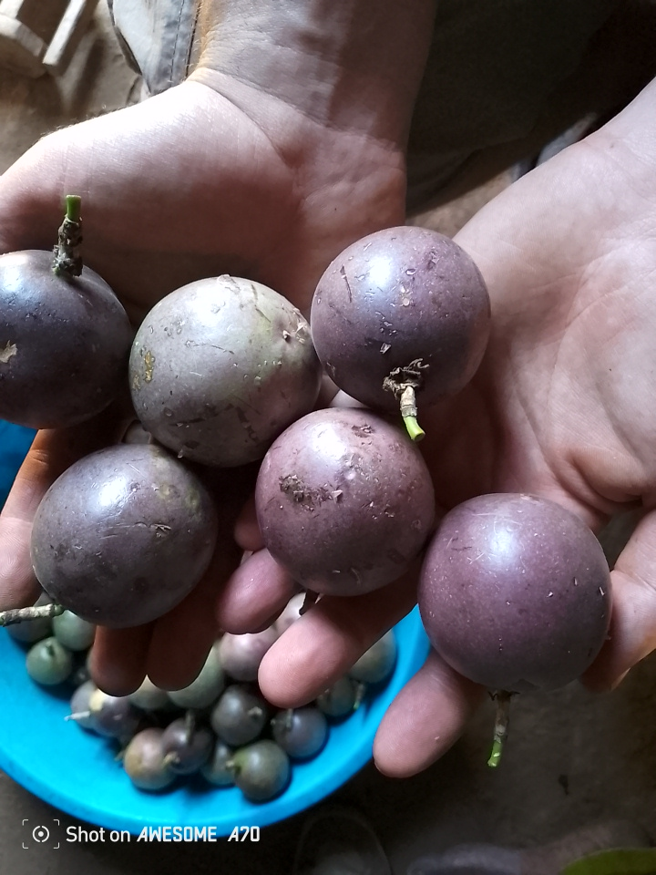
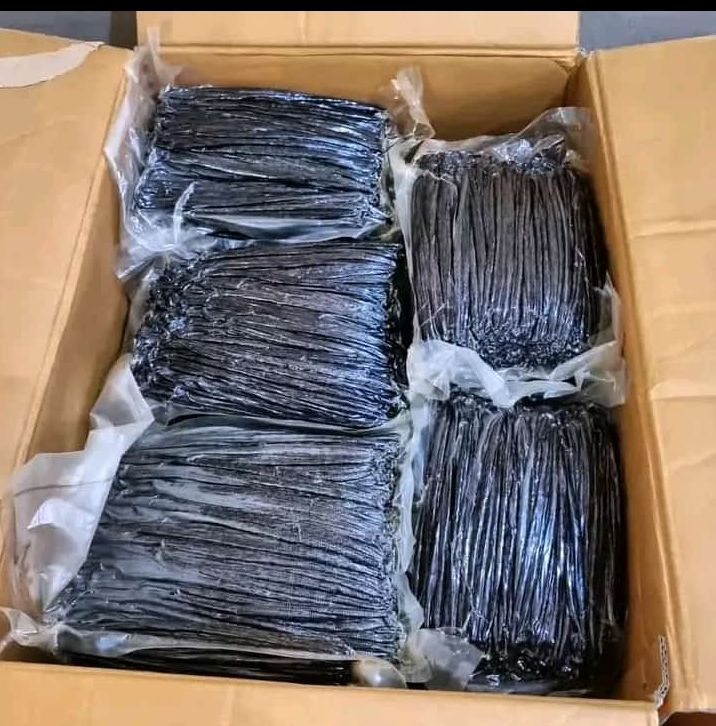
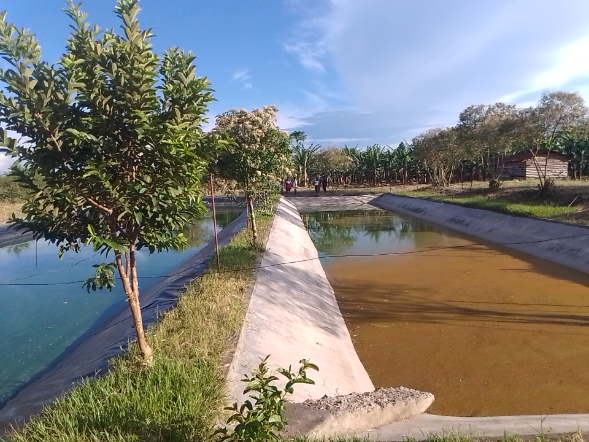

Nine Programs,
One Mission

Modern Beekeeping on
Small Pieces of Land
MOVFACOS introduces its members to modern, scientific beekeeping methods specifically adapted for the small land holdings typical across Kasese District. Using Langstroth and top-bar hives, farmers learn hive placement, colony management, queen rearing, and safe honey extraction — producing premium organic honey from the rich floral environment near Queen Elizabeth National Park. The project generates a high-value income stream that requires very little space, making it ideal for households with limited farmland. Beyond income, the bees serve as vital pollinators for vanilla flowers, cocoa, and fruit crops grown across MOVFACOS member farms.

Skilling Youth & Young Mothers in
Hairdressing & Salon Management
This hands-on vocational program equips out-of-school youth and young mothers with professional hairdressing, beauty therapy, and salon business management skills. Participants learn cutting, braiding, chemical treatments, and client management — then receive startup toolkits to launch micro-enterprises. The program directly targets youth unemployment, a critical challenge in Kasese District, turning a marketable skill into a sustainable livelihood that can be practiced from home or a low-cost salon space.

Female Youth in
Poverty Eradication Projects
MOVFACOS actively recruits and supports female youth participation across all its economic programs — from vanilla farming and handcraft production to savings groups and vocational training. This project provides mentorship, subsidised training fees, and female-safe meeting spaces to break the social and economic barriers that prevent young women from joining cooperative programs. By embedding gender inclusion into every project design, MOVFACOS ensures that the next generation of women in Kasese District have an equal stake in their community's agricultural future.

MOVFACOS Tree
Seedlings Nursery
Community-managed tree nurseries produce thousands of indigenous and fruit tree seedlings each season, distributed to member households across all 25 farmer groups. Species include mango, avocado, jackfruit, Grevillea, and eucalyptus — chosen for their dual role as food sources and environmental protectors. The nurseries rehabilitate degraded hillsides, reduce soil erosion along Rwenzori watershed areas, create shade for vanilla vines, and provide a new income stream from seedling sales. Each nursery is managed by trained women and youth who also receive a share of seedling revenues.

MOVFACOS Export-Quality
Passion Fruits
Leveraging the exceptional altitude and volcanic soils of the Mt Rwenzori slopes, MOVFACOS cultivates passion fruit to international export quality standards. Farmers receive training in trellis construction, integrated pest management, post-harvest handling, and grading protocols required for export. The project connects smallholders directly to premium buyers in Kampala and international markets, commanding significantly higher prices than local sales. Women farmers on the Rwenzori slopes lead this project, with their collective output pooled for volume pricing and export documentation under the MOVFACOS brand.

Promoting a Savings Culture
Among Women
Through Village Savings and Loan Associations (VSLAs) and MOVFACOS' in-house SACCO, this project builds a structured savings culture among women who have historically been excluded from formal financial services. Groups of 15–25 women meet weekly to save, access emergency loans, and invest collectively in farming inputs or small businesses. Financial literacy training covers budgeting, interest calculation, and record keeping — empowering women to make informed decisions about household finances and cooperative investments. Since launch, hundreds of women across Kasese District have accumulated savings and accessed credit for the first time.

MOVFACOS Cured
Vanilla Beans Project
Rather than selling green beans at farmgate prices, MOVFACOS trains its 2,551 member farmers in the full vanilla curing process — blanching, slow oven-drying, sweating, and conditioning — to produce dark, aromatic Grade A vanilla beans that command significantly higher prices in export markets. The cooperative's centralised curing facility in Kajwenge ensures quality consistency across all batches. Certified organic status, achieved through rigorous input controls and documentation, opens access to premium natural flavour markets in Europe, North America, and the Middle East. This project is the highest-value chain component in MOVFACOS' portfolio.

Sim Sim (Sesame)
Farm Visitation Project
MOVFACOS organises structured farm-to-farm visitation programs for members cultivating sim sim (sesame), one of Uganda's most valuable oil crops. Farmer exchange visits allow growers to observe best practices in spacing, organic fertilisation, pest scouting, harvesting techniques, and post-harvest threshing and drying. The project promotes peer learning as the most effective extension method for rural Ugandan farmers, reducing input costs and lifting yields across participating households. Collectively procured sim sim is then marketed through MOVFACOS' bulk-buying channels, ensuring members receive better farmgate prices than individual negotiation allows.

Extending Lakes at Homes to
Enhance Community Fishing
This project supports MOVFACOS member households to excavate and expand existing water bodies — small ponds, seasonal wetlands, and homestead lakes — into productive freshwater fish farms. Technical training covers pond construction, stocking densities, tilapia and catfish management, water quality monitoring, and harvesting cycles. By turning underutilised land into protein-producing water assets, the project addresses food insecurity, diversifies household income, and reduces dependence on single cash crops. Community fish ponds also serve as water reservoirs during the dry season, supporting kitchen garden irrigation and livestock watering for the wider village.
Fresh Fish from
MOVFACOS Ponds
See the quality of tilapia and catfish harvested from MOVFACOS community fish ponds in Kasese District. Each fish is raised in clean, managed freshwater ponds — fed on natural inputs, harvested at peak condition, and sold directly to local markets and households. This is what food security looks like: nutritious, affordable protein grown right at home.